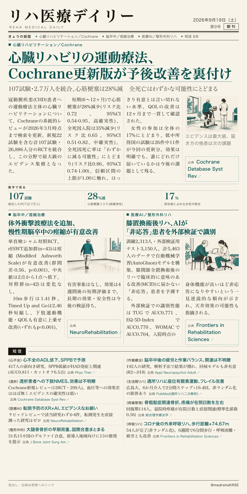
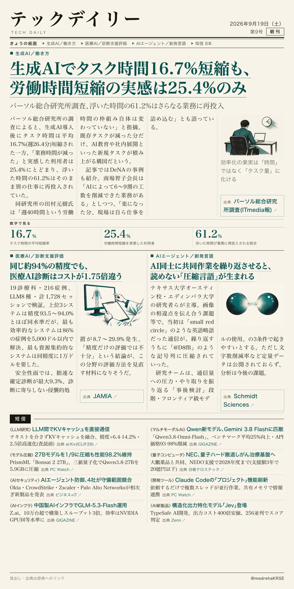

リハ医療デイリー
心臓リハビリの運動療法、Cochrane更新版が予後改善を裏付け
107試験・2.7万人を統合、心筋梗塞は28%減 全死亡はわずかな可能性にとどまる
冠動脈疾患患者への運動療法主体の心臓リハビリを、Cochraneが2026年3月まで検索を更新した最新版(107試験・26,886人)で評価。心筋梗塞・入院は明確に減った一方、全死亡率の改善はまだ「わずかな可能性」の水準にとどまる。

テックデイリー
生成AIでタスク時間16.7%短縮も、労働時間短縮の実感は25.4%のみ
パーソル総合研究所調査、浮いた時間の61.2%はさらなる業務に再投入
生成AI導入後、タスク時間は平均16.7%(週26.4分)短縮された一方、実際に「業務時間が減った」と感じた利用者は25.4%にとどまる。DeNAの南場智子会長は6〜9割の工数削減を明かしつつ「楽になった分、仕事を詰め込む」とも語る。
